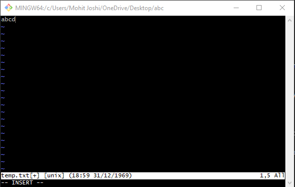
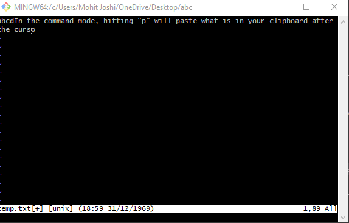
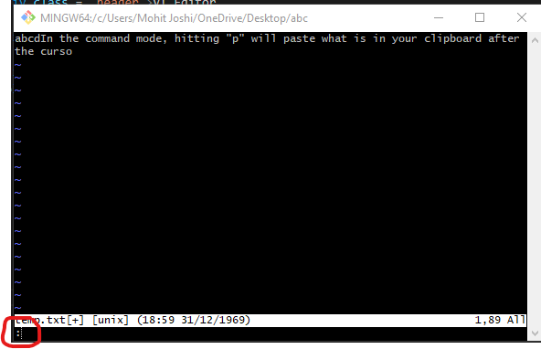
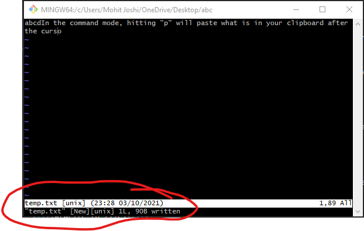
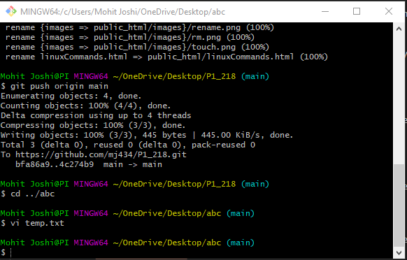
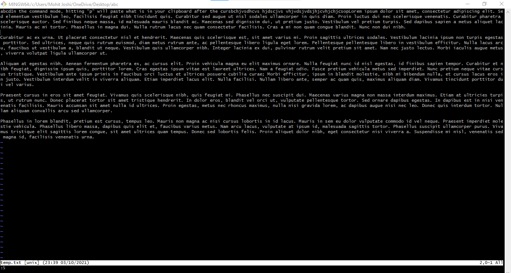

VI is the oldest of all text editors. It is integrated with amy linux system and is very dependable. Below are some commands and their examples.
- i(Insert Mode)
- p(Paste)
- :
- :w(Write to file)
- :q(Quit)
- :<linenumber>
- :/<string>
While in the initial/command mode of VI, typing the "i" character will enable insert mode so you can start writing on the file.
Notice that it says "INSERT" on the bottom. Hitting the escape key will take one back to command line.
In the command mode, hitting "p" will paste what is in your clipboard after the cursor.
In command mode, ":" will enable you to use commands which shows at the bottom of the screen.
This command saves your changes in the file.
Notice it says ....written after we hit the return key.
This command quits the file. It closes the file without changes and returns to the command line. If :wq is passed instead, it will save and quit.
This command allows you to jump to any line on the file after the cursor.
This searches for the string provided in the file and takes the cursor to the line the string is in.